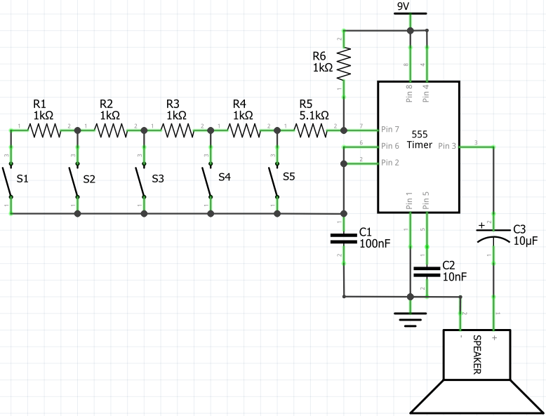
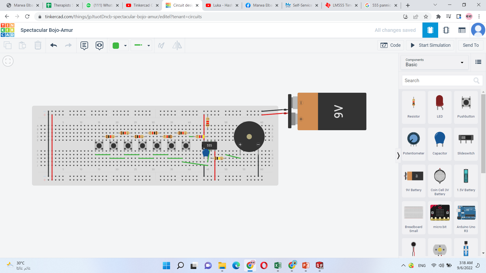

Choose the circuit
While searching on tinker cad tutorials on YouTube I found a title using a 555 timer to make a piano, So I started to watch the video then I searched for the piano schematic on google and found this .

I was very excited to make this circuit by my own so I started to select the required components
Components List
the used components are:
Breadboard.
9V Battary.
555 IC .
Pushbottons.
100 nF capacitor.
Piezo buzzer.
Resistors.
Build Circuit on TinkerCad
I started to put my components to build the circuit, the output depends manily of the value of R6 1Kohm and R5 6.2Kohm and the values of other resistors strting from the right to left are 390 ohm ,910 ohm,1Kohm,1.1kohm,620 ohm,1.3K ohm
the final cuitcuit is shown in the below photo
